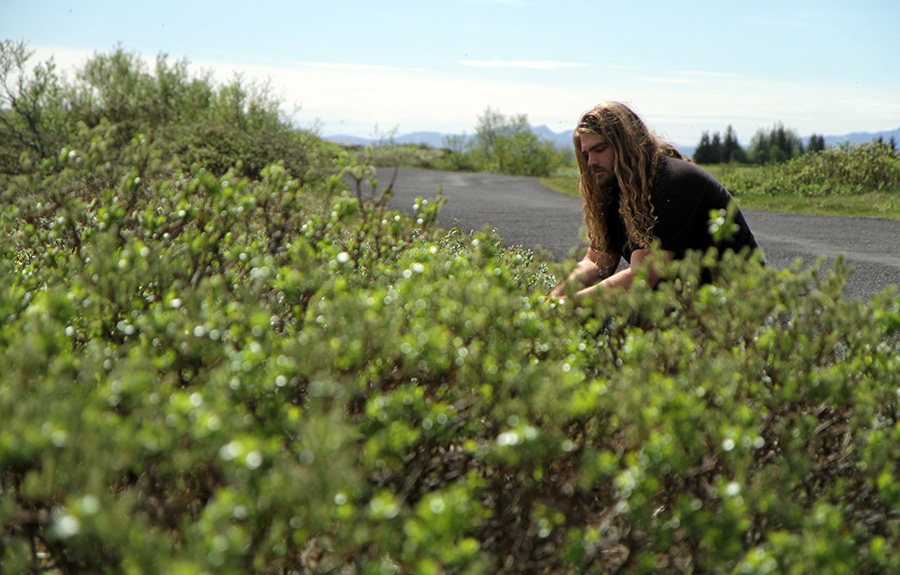
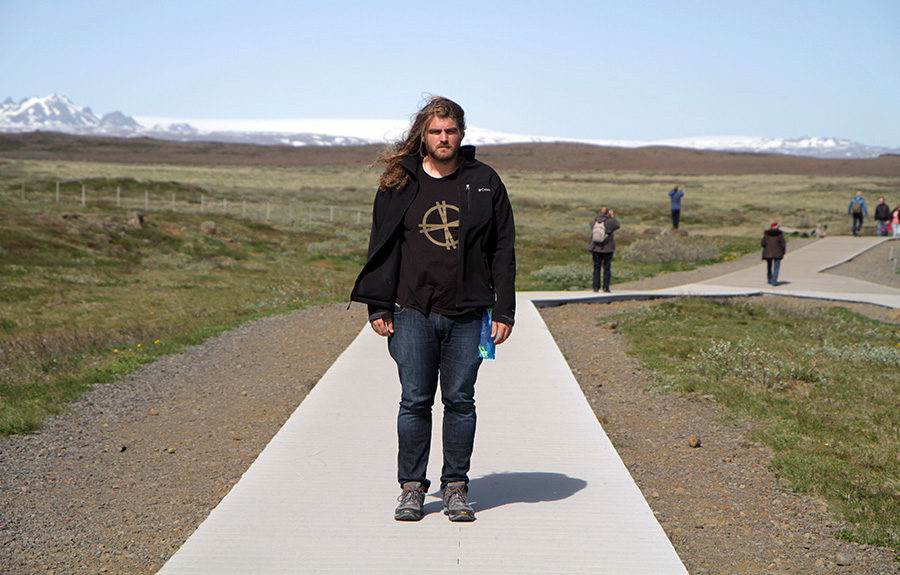

Summary
Cabbibo is a Simulation Artist based in Point Arena, California.
Their work focuses on the physicality of our digital environments, the and the synesthetic properties of code
They have exhibited work in many locations both digital and physical including SFMoMa, sp[a]ce, MOR, Sundance and Acute Art as well as collaborating with artists such as Olafur Elliason, Chris Milk, Beeple and SOPHIE. In addition, They have completed commissions and residencies for a plethora of companies and research groups including Unity, Adobe, Google and Dynamicland
Quick Info
- Media: Web, XR, Graphics, Computation, Performance, Audio
- Site: http://cabbi.bo
- Twitter: @cabbibo
- Contact: isaaclandoncohen@gmail.com
Interviews
Selected Articles
- "The Shimmering Worlds of Isaac Cohen"
-Philippa Warr , Rock Paper Shotgun - "Lose yourself in this trippy, existential interactive picturebook"
- Leigh Alexander , Boing Boing - "This amazing interactive picture book for the Web makes me jealous of kids these days"
- Owen Williams , The Next Web - "Dive Into a Deep-Sea Digital Picture Book"
- Nathaniel Ainley , The Creators Project - "Mixed By Cabbibo"
- Amanda Mussi Thump - "I Used Leap Motion to Touch a Virtual Rainbow Universe"
Beckett Mufson The Creators Project - "[Exclusive] Stream Rioux's New EP "System Preferences" With Interactive Virtual Environment"
- Zach Sokol The Creators Project - "Cabbibo"
- Natalie Papillion Future of Storytelling
Awards
- 'FLOAT Museum' - Official Selection SFMoMa
- 'L U N E' - Official Selection Teknopolis
- 'Cabbibo.com'
- Site Of the Day FWA - 'ENOUGH'
- Site of the Day FWA - 'ENOUGH'
- Site of the Month FWA - 'ENOUGH'
- The Cutting Edge Award Adobe - 'ENOUGH'
- Nuovo Award Honorable Mention IGF - 'ENOUGH'
- Site of the Year Nomination AWWWARDS - 'H E N G E' - Official Selection MUTEK
Images


